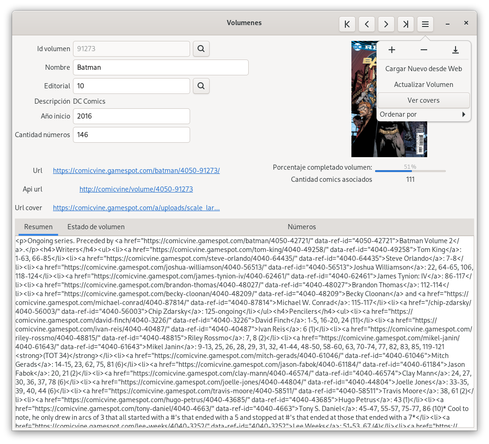

Volumen
Ventana de administración de los volúmenes o series. Los comics pertenecen a una serie o volumen, por ejemplo Batman, Superman o lox X-men. Cada una de estas series está compuesta por uno o varios ejemplares o números que dentro de Babelcomics se llamaninformación de comic, metada o comic info. Las series o volumenes son estos contenedores.

Campos
Id Volumen
Identificador unico. Al usar Comicvine como proveedor de metadata para los comics. Este id se corresponde con el id de este sitio. Igualmente, Babelcomics permite cargar de forma manual un volumen en este caso el id que usa es negativo. De esta manera se diferencia una serie o volumen externo de una interna
Nombre
Nombre del Volumen o serie
Editorial
Id de la editorial que creo este volumen o serie.
Descripción
Nombre de la Editorial
Año inicio
Año en el que se creo el volumen o serie
Cantidad de números
Cantidad de números que se tiene sobre este volumen. Tener en cuenta que para series que todavía se sigan imprimiendo va a ser necesario actualizar cada tanto. 1
URL
Dirección web del volumen.
API URL
Url de la api. Agregando la key de servicio se debería poder ver el Json que este retorna
URL Cover
Cada Volumen tiene un cover que por lo general se corresponde con el primer número. Lo que se muestra aca es el link a esta imagen.
Porcentaje completado Volumen
Esto es un cálculo que retorna la cantidad de comics digitales distintos que se tienen de este volumen.
Cantidad Comics Asociados
Esto es un cálculo que retorna la cantidad de comics digitales que se tienen de este volumen.
Resumen
Resumen del volumen.
Estado Volumen
completar
Números
completar
Menu
[1] debería de tener un proceso automatico que cada X cantidad de tiempo desde su ultima actualización haga
una consulta a servicio de Comicvine para ver si hay cambios.